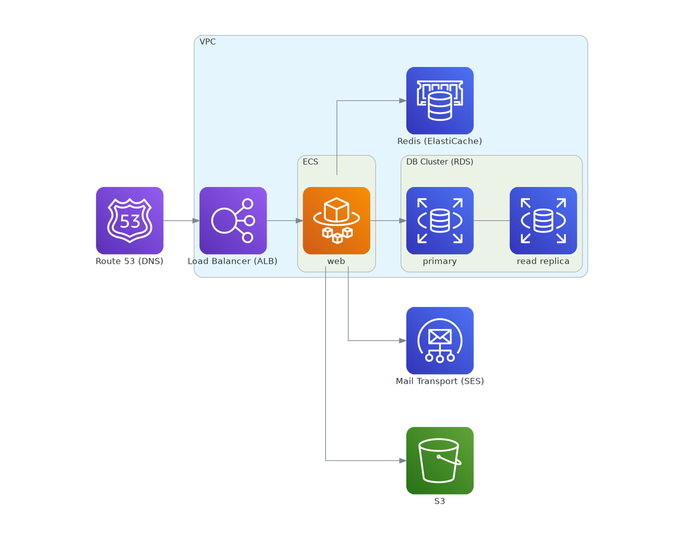

Diagrams
Last week I tried out diagrams to knock up some cloud infrastructure diagrams. There are several things I really like about this tool:
- The learning curve is very easy. I was able to absorb the key concepts and produce a useful diagram showing the AWS setup for an application I am working on within about 30 mins of installing it for the first time.
- The [effort in]:[pretty pictures out] ratio is very satisfying.
- Because the diagram is generated from code, it can live in your repo. The diff changing the diagram could be in the same commit as the updates to your CDK definitions or ansible playbooks or whatever it is that actually makes the infrastructure changes.
For example, the following diagram

is generated from this short python snippet:
from diagrams import Cluster, Diagram from diagrams.aws.compute import Fargate from diagrams.aws.database import RDS, ElastiCache from diagrams.aws.engagement import SES from diagrams.aws.network import ELB, Route53 from diagrams.aws.storage import S3 with Diagram("", show=False): ses = SES("Mail Transport (SES)") dns = Route53("Route 53 (DNS)") s3 = S3("S3") with Cluster("VPC"): lb = ELB("Load Balancer (ALB)") elasticache = ElastiCache("Redis (ElastiCache)") with Cluster("ECS"): web = Fargate("web") with Cluster("DB Cluster (RDS)"): db_primary = RDS("primary") db_primary - RDS("read replica") dns >> lb lb >> web web >> elasticache web >> db_primary web >> s3 web >> ses